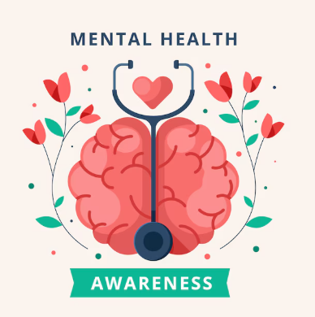

Mental health is an integral part of daily life and is essential for achieving happiness and success in various
aspects of life. Being aware of the importance of mental health, identifying issues before they worsen, and
seeking support when needed can significantly contribute to improving the quality of life.

What is Mental Health?
Mental health refers to a state of emotional, psychological, and social well-being that
enables an individual to cope with the daily stresses of life, work effectively, build healthy
relationships, and achieve their personal potential. Mental health is a fundamental aspect of
overall health,and it’s impossible to achieve optimal physical health without good mental health.
The Importance of Mental Health:
Mental health directly affects all aspects of an individual's life, such as:
- Daily Life: Enables individuals to handle challenges and make sound decisions.
- Social Relationships: Helps in building strong and supportive relationships with others.
- Work Performance: Affects productivity and creativity in work or studies.
- Physical Health: Mental health has a direct impact on the immune system, heart health, and energy levels.
Dimensions of Mental Health:
- Emotional Dimension:
- Refers to the ability to manage various emotions such as happiness, sadness, anger,
or anxiety in a healthy way.
- A mentally healthy person can accept and deal with their emotions without being overwhelmed by them.
- Cognitive or Mental Dimension:
- Involves clarity of thought, sound decision-making, focus, and problem-solving abilities.
- Includes the ability to learn from past experiences and benefit from them.
- Social Dimension:
- Reflects the quality of relationships an individual builds with family, friends, and society.
- A person with good mental health can form relationships based on mutual respect and support.
- Behavioral Dimension:
- Evident in how a person reacts to different life situations.
- Includes the ability to deal with stress positively without resorting to unhealthy coping mechanisms like addiction.

What Affects Mental Health?
Mental health is influenced by several factors, including:
- Biological Factors (Genetics and heredity,Chemical changes in the brain ,Chronic physical illnesses.)
- Psychological Factors (Psychological trauma (losing a loved one), Negative thinking patterns (overthinking or lack of self-confidence)).
- Environmental and Social Factors (Financial pressures,Family relationship issues,Work or study environments)
Signs of Good Mental Health:
- Feeling satisfied with oneself and life.
- The ability to handle stress and solve problems.
- Having healthy relationships with others.
- Maintaining a balance between work and personal life.
- Feeling hopeful and optimistic about the future.

Common Mental Health Disorders:
- Depression: Persistent sadness and loss of interest in activities once enjoyed
- Anxiety: Excessive worry and fear about future events without clear justification.
- Bipolar Disorder: Extreme mood swings between periods of intense happiness
and periods of depression
- Post-Traumatic Stress Disorder (PTSD): Occurs as a result of experiencing
a traumatic event, causing painful and recurring memories.
- Schizophrenia: A severe mental disorder that affects thinking and perception,
often causing hallucinations or delusions.
How to Improve Mental Health:
- Talk to Someone You Trust: Share your feelings with friends or family members.
and Avoid bottling up emotions.
- Engage in Physical Activity: Exercise helps reduce anxiety and improve mood.
- Adopt a Healthy Lifestyle: Eat a balanced diet and get enough sleep.
- Set Realistic Goals: Achieving goals provides a sense of accomplishment.
- Seek Help When Needed:Consult a mental health professional if you feel
overwhelmed or unable to cope with stress.
Mental Health Is Not a Weakness:
It’s important to understand that seeking mental health support is not a sign of weakness.
Instead, it’s a sign of strength and awareness of the importance of self-care. Just as we
take care of our bodies when we are ill, we must also care for our minds and emotions.